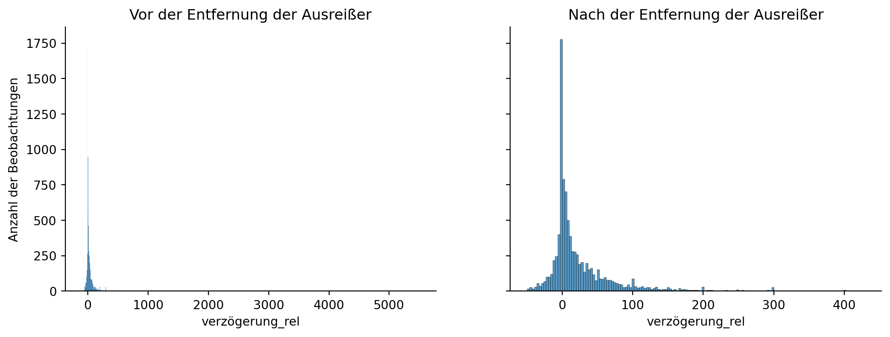

Entscheidungen treffen: Bedingte Anweisungen (If-Statements) helfen uns, in einem Programm unterschiedliche Aktionen auszuwählen, je nachdem, ob bestimmte Bedingungen erfüllt sind oder nicht.
Anpassung an Situationen: If-Statements ermöglichen es, Programme zu erstellen, die flexibel auf verschiedene Situationen reagieren und sich an unterschiedliche Bedingungen anpassen können.
Einfache Logik: Bedingte Anweisungen bieten eine leicht verständliche Möglichkeit, um in Programmen logische Zusammenhänge und Abhängigkeiten zwischen Daten und Aktionen abzubilden, was für die Entwicklung von vielfältigen und nützlichen Anwendungen erforderlich ist.
Hinweis: bedingte Anweisungen werden auch als if-Statements bezeichnet.
Wie funktionieren bedingte Anweisungen?
Bedingte Anweisungen
Wie funktionieren bedingte Anweisungen?
Bedingung: Wenn eine Bedingung erfüllt ist, wird ein bestimmter Codeblock ausgeführt. Wenn die Bedingung nicht erfüllt ist, wird ein anderer Codeblock ausgeführt.
Syntax:
if Bedingung_1: Aktion_Aelif Bedingung_2: Aktion_B...else: Aktion_Z
Kommentar
if: Startet die If-Anweisung und prüft die erste Bedingung.
Bedingung: Ein Ausdruck, der entweder True oder False ergibt.
Codeblock: Eingerückter Abschnitt, der bei erfüllter Bedingung ausgeführt wird.
elif: Prüft (optional) zusätzliche Bedingungen, falls vorherige nicht erfüllt sind.
else: Definiert Aktionen, wenn keine der Bedingungen erfüllt ist.
Beispiel: Bedingte Anweisungen
Bedingte Anweisungen
Beispiel: Bedingte Anweisungen
Wir wollen auf Basis der Einnahmen und Ausgaben eines Unternehmens den Gewinnstatus des Unternehmens bestimmen und automatisiert ausgeben.
In diesem Szenario könnten Sie eine bedingte Anweisung verwenden, um den Gewinnstatus des Unternehmens basierend auf den Einnahmen und Ausgaben zu ermitteln:
einnahmen =50_000# Die Einnahmen des Unternehmens in diesem Quartalausgaben =55_000# Die Ausgaben des Unternehmens in diesem Quartalif einnahmen > ausgaben:print("Das Unternehmen hat in diesem Quartal Gewinn gemacht.")elif einnahmen == ausgaben:print("Das Unternehmen hat in diesem Quartal weder Gewinn noch Verlust gemacht.")else:print("Das Unternehmen hat in diesem Quartal Verlust gemacht.")
Arten von Bedingungen
Bedingte Anweisungen
In Python können verschiedene Arten von Bedingungen geprüft werden, dazu gehören:
1️⃣ Vergleichsoperatoren:
Gleichheit: a == b
Ungleichheit: a != b
Größer als: a > b
Kleiner als: a < b
Größer oder gleich: a >= b
Kleiner oder gleich: a <= b
3️⃣ Logische Operatoren:
Logisches UND (AND): a and b
Logisches ODER (OR): a or b
Logisches NICHT (NOT): not a
2️⃣ Prüfung auf Mitgliedschaft:
Element in einer Liste oder einem anderen Container: x in container
Element nicht in einer Liste oder einem anderen Container: x not in container
4️⃣ Prüfung auf Identität:
Identität: a is b
Nicht identisch: a is not b
Aufgabe 1: Bedingte Anweisungen
Bedingte Anweisungen
Schreiben Sie eine Funktion, die basierend auf dem jährlichen Einkommen einer Person den entsprechenden Steuersatz berechnet und die zu zahlende Steuer zurückgibt. Dabei sollen Sie bedingte Anweisungen verwenden, um unterschiedliche Steuersätze für verschiedene Einkommensstufen zu berücksichtigen.
Anforderungen:
Erstellen Sie eine Funktion namens berechne_steuern, die das jährliche Einkommen als Parameter akzeptiert.
Verwenden Sie bedingte Anweisungen, um den Steuersatz basierend auf dem Einkommen zu bestimmen:
Einkommen bis 14.000 Euro: Steuersatz von 12%
Einkommen zwischen 14.001 und 55.000 Euro: Steuersatz von 24%
Einkommen zwischen 55.001 und 200.000 Euro: Steuersatz von 42%
Erstellen Sie eine Funktion namens bestimme_kundenbindung, die den jährlichen Umsatz eines Kunden und die Anzahl der Transaktionen in den letzten drei Jahren als Parameter akzeptiert.
Überprüfen Sie, ob der übergebene Umsatz ein numerischer Wert größer oder gleich 0 und die Anzahl der Transaktionen ein numerischer Wert größer oder gleich 1 ist. Ist dies nicht der Fall, geben Sie die Nachricht “Ungültige Eingabe! Bitte geben Sie gültige Werte für Umsatz und Transaktionsanzahl ein.” zurück.
Verwenden Sie bedingte Anweisungen, um die Kundenbindungskategorie basierend auf dem Umsatz und der Transaktionsanzahl zu bestimmen:
Umsatz bis 1.000 Euro und weniger als 10 Transaktionen: “Bronze”
Umsatz zwischen 1.001 und 5.000 Euro oder 10 bis 29 Transaktionen: “Silber”
Umsatz zwischen 5.001 und 10.000 Euro oder 30 bis 59 Transaktionen: “Gold”
Umsatz über 10.000 Euro oder 60 oder mehr Transaktionen: “Platin”
Geben Sie die ermittelte Kundenbindungskategorie zurück.
Beispiel:
bestimme_kundenbindung(7000, 40) # Sollte "Gold" ausgebenbestimee_kundenbindung(7000, 3) # Sollte "Gold" ausgebenbestimme_kundenbindung(-100, 0) # Sollte "Ungültige Eingabe!..." ausgeben
Lösung 2: Bedingte Anweisungen
Bedingte Anweisungen
Code
def bestimme_kundenbindung(umsatz, transaktionen):if umsatz <0or transaktionen <1:return"Ungültige Eingabe! Bitte geben Sie gültige Werte für Umsatz und Transaktionsanzahl ein."if umsatz <=1000and transaktionen <10: kategorie ="Bronze"elif (umsatz >1000and umsatz <=5000) or (transaktionen >=10and transaktionen <30): kategorie ="Silber"elif (umsatz >5000and umsatz <=10000) or (transaktionen >=30and transaktionen <60): kategorie ="Gold"else: kategorie ="Platin"return kategorie# Beispiel: Berechnung der Kundenbindungskategorie für 7.000 Euro Umsatz und 40 Transaktionenkategorie = bestimme_kundenbindung(7000, 40)print(kategorie) # Sollte "Gold" ausgeben
2 BA-Prozess: Transformieren und Visualisieren
Business Analytics Prozess: Transformieren und Visualisieren
Die Transformation der Daten ist der Schritt im Business-Analytics-Prozess, bei dem bestehende Daten analysiert, neue Informationen generiert und der Datensatz so bearbeitet wird, dass er zur Beantwortung der Problemstellung hilfreich ist. Dies kann durch Aggregation, Gruppierung und Filterung von Daten sowie durch das Berechnen neuer Daten aus bestehenden Informationen erfolgen.
Wichtigkeit der Transformation:
Erkenntnisgewinn: Die Transformation von Daten ermöglicht es, neue Erkenntnisse aus den vorhandenen Daten zu gewinnen und hilft bei der Beantwortung der ursprünglichen Problemstellung.
Informationsverdichtung: Durch Aggregation und Gruppierung von Daten können komplexe Datensätze auf übersichtliche und relevante Informationen reduziert werden. Bessere Analyse: Die Transformation von Daten verbessert die Qualität der Analyse, da sie sicherstellt, dass nur relevante Informationen und Zusammenhänge untersucht werden. Basis für Visualisierung und Modellierung: Die Transformation von Daten bildet die Grundlage für anschließende Schritte, wie die Visualisierung und das Modellieren, indem sie die benötigten Daten in einer geeigneten Form bereitstellt.
Entscheidungsunterstützung: Durch die Transformation von Daten können Entscheidungsträger fundierte Entscheidungen auf Basis der gewonnenen Erkenntnisse treffen.
Neue Daten aus bestehenden Informationen berechnen
Deskriptive Analyse
Zur Erinnerungüí°
Problemstellung: Projekte dauern länger als geplant und kosten mehr als geplant.
Neue Informationen werden benötigt
Verzögerung: z.B. zeitliche Überschreitung der Projekte ggü. dem Plan in Tagen
Kostenüberschreitung: z.B. finanzielle Überschreitung der Projekte ggü. dem Plan in Euro
Verzögerung in Prozent: z.B. zeitliche Überschreitung der Projekte ggü. dem Plan in Prozent
Kostenüberschreitung in Prozent: z.B. finanzielle Überschreitung der Projekte ggü. dem Plan in Prozent
Neue Spalten einem Dataframe hinzufügen
Deskriptive Analyse
Neue Spalten können auf verschiedene Arten erstellt werden. Zwei typische Vorgehen sind:
Neue Spalte mit []
df["Spalte_neu"] = df["Spalte_alt"] +1
Neue Spalte mit assign()
df = df.assign(Spalte_neu = df["Spalte_alt"] +1)
Neue Spalten einem Dataframe hinzufügen: .assign()
Deskriptive Analyse
Die Funktion .assign() hat gegenüber der Verwendung von [] insbesondere den Vorteil, dass sie
mehrere Spalten gleichzeitig erstellen kann.
im Rahmen einer Kette von Operationen verwendet werden kann.
verzögerung_rel und kostenüberschreitung_rel werden mit lambda berechnet, da sie auf Spalten basieren, die erst innerhalb des assign()-Aufrufs erstellt werden und somit im Dataframe df noch nicht existieren.
Grundkonzept von lambda: Anonyme, inline-definierte Funktionen, die für kurze, einmalige Berechnungen verwendet werden.
Verzögerte Berechnung: lambda ermöglicht den Zugriff auf neu erstellte Spalten im assign-Aufruf.
df: ist ein temporärer DataFrame innerhalb der lambda-Funktion, wobei jede andere Bezeichnung auch verwendet werden könnte.
Neue Spalten aus Text extrahieren
Deskriptive Analyse
Eine häufige Aufgabe ist es, Text-Spalten zu transformieren, z.B. um Informationen aus dem Text zu extrahieren.
Beispiel: Der Name des Projektes setzt sich zusammen aus der Art des Projektes und dem Ort des Projektes (Straßenname). Die Art des Projektes könnte uns interessieren und für weitere Analyse nützlich sein.
Lösung: Wir extrahieren die Art des Projektes aus dem Namen des Projektes.
df["art"] = df["name"].str.split("//").str[0]
df["name"].str.split("//"): Wir teilen den Text in der Spalte name anhand des Zeichens // in zwei Teile auf.
.str[0]: Wir wählen den ersten Teil aus.
df["art"] = ...: Wir speichern den ersten Teil in der Spalte art.
Umgang mit Ausreißern
Deskriptive Analyse
Ausreißer
Werden auch als Outlier bezeichnet und sind Beobachtungen oder Datenpunkte, die sich deutlich von anderen Werten in einer Datensammlung unterscheiden. Sie können auf Messfehler, Zufallsvariationen oder tatsächliche Abweichungen in der zugrunde liegenden Verteilung zurückzuführen sein und können die statistische Analyse beeinflussen, wenn sie nicht angemessen berücksichtigt werden.
Identifikation von Ausreißern: unter andem z.B. durch
Deskriptive Statistiken: Berechnung von Maßen wie Mittelwert, Median, Quartile, um erste Anzeichen von Ausreißern zu erkennen.
Visualisierung: Erstellen von Boxplots, Histogrammen oder Streudiagrammen, um Verteilungen und mögliche Ausreißer visuell zu erfassen.
Z-Scores: Berechnung von Z-Scores (Standardabweichungen vom Mittelwert), um extreme Werte in Bezug auf die Streuung der Daten zu identifizieren.
Identifikation von Ausreißern: deskriptive Statistiken
Finding: Die größten relativen Verzögerungen betreffen Projekte mit einer relativ kurzen Dauer und sind somit durchaus plausibel.
Behandlung von Ausreißern
Deskriptive Analyse
Behandlung von Ausreißern: unter anderem z.B. durch
Ausreißer entfernen: Entfernen von Ausreißern, wenn sie auf Messfehler zurückzuführen sind.
Ausreißer ersetzen: Ersetzen von Ausreißern durch andere Werte, z.B. durch den Median oder den Mittelwert.
Ausreißer ignorieren: Ignorieren von Ausreißern, wenn sie auf tatsächliche Abweichungen in der zugrunde liegenden Verteilung zurückzuführen sind.
Behandlung von Ausreißern
Deskriptive Analyse
In unserem Falle ist teilweise nicht klar, ob die Ausreißer auf Messfehler oder tatsächliche Abweichungen in der zugrunde liegenden Verteilung zurückzuführen sind. Beispiel:
Kostenüberschreitung: Die Kostenüberschreitung von über 1 Mrd. EUR erscheint auf den ersten Blick als Eingabe- bzw. Messfehler.
Verzögerung: Die größten relativen Verzögerungen betreffen Projekte mit einer relativ kurzen Dauer und sind durchaus plausibel. Allerdings gibt es auch Projekte, bei denen die Dauer signifikant unterschritten wird (dauer_ist = 0)
➡️ In unserem Beispieldatensatz werden wir die Ausreißer deshalb entfernen.
Wichtig:
Entscheidung über die Behandlung von Ausreißern sollte immer im Kontext der zugrunde liegenden Daten und der Fragestellung getroffen werden. Der Umgang mit Ausreißern sollte auch immer transparent dokumentiert werden, da wir den Datensatz damit verändern.
Entfernen von Ausreißern via Quantile
Deskriptive Analyse
Quantile:
Quantile: Teilen Daten in gleiche Abschnitte
Arten von Quantilen: Quartile (4 Teile), Quintile (5 Teile), Dezile (10 Teile), Perzentile (100 Teile)
Perzentile: Spezialfall von Quantilen, teilen Daten in 100 Teile
Beispiel: 99. Perzentil: Wert, unterhalb dessen 99 % der Daten liegen; zeigt einen sehr hohen Wert im Vergleich zur Gesamtverteilung (z. B. Einkommen, Testergebnisse)
Beispiel: Entfernen der Ausreißer der relativen Verzögerung unterhalb des 1. Perzentils und oberhalb des 99. Perzentils
q1 = df["verzögerung_rel"].quantile(0.01)q99 = df["verzögerung_rel"].quantile(0.99)# Entfernen der Ausreißerdf_neu = df.query("verzögerung_rel > @q1 and verzögerung_rel < @q99")
q1 und q99: 1. und 99. Perzentil der relativen Kostenüberschreitungen
@: Pandas-Syntax für Variablen in der Query-Syntax
Entfernen von Ausreißern via Quantile: Vergleich der Verteilungen
Deskriptive Analyse
Vergleich der Verteilungen: Wir vergleichen die Verteilungen der relativen Verzögerung vor und nach der Entfernung der Ausreißer (1. und 99. Perzentil) via Histogramm

Entfernen von Ausreißern via Quantile: Vergleich der Verteilungen
Deskriptive Analyse
Vergleich der Verteilungen: Wir vergleichen die Verteilungen der relativen Kostenüberschreitung vor und nach der Entfernung der Ausreißer (1. und 99. Perzentil) via Boxplot
Aufgabe: Entfernen von Ausreißern
Deskriptive Analyse
Für die Spalten kostenüberchreitung_abs, kostenüberschreitung_rel, verzögerung_abs und verzögerung_rel sollen die Ausreißer unterhalb des 1. Perzentils und oberhalb des 99. Perzentils entfernt werden.
Ergebnis sollte ein bereinigter Dataframe df sein.
Nachdem wir nun (i) relevante Daten hinzugefügt und (ii) Ausreißer entfernt haben, können wir uns nun mit der Analyse der Daten beschäftigen.
Wir könnten folgenden Fragen nachgehen:
Ausgangssituation bestätigen: gibt es tatsächlich Verzögerungen und Kostenüberschreitungen?
Hypothesen zur Erklärung der Verzögerungen und Kostenüberschreitungen aufstellen und prüfen
Haben sich die Verzögerungen und Kostenüberschreitungen im Laufe der Zeit verändert?
Gibt es einen Zusammenhang zwischen den Verzögerungen und den Kostenüberschreitungen?
Sind die Verzögerungen und Kostenüberschreitungen abhängig vom Team?
Sind die Verzögerungen und Kostenüberschreitungen abhängig von der Art des Projekts?
Sind die Verzögerungen und Kostenüberschreitungen abhängig von der Größe des Projekts?
Gruppieren und Aggregieren
Deskriptive Analyse
Warum?
Gruppieren und Aggregieren von Daten ist eine leistungsfähige Methode zur Analyse und Zusammenfassung großer Datenmengen.
Sie ist nützlich für die deskriptive Statistik, da sie es ermöglicht, Muster, Trends und Zusammenhänge in den Daten zu erkennen.
Der Ansatz funktioniert, indem man die Daten zunächst nach bestimmten Kriterien in Gruppen einteilt (gruppieren) und dann innerhalb dieser Gruppen verschiedene statistische Funktionen anwendet (aggregieren), wie zum Beispiel Mittelwert, Median, Summe oder Anzahl.
df.groupby("spalte_1"): Teilt den DataFrame df in Gruppen basierend auf den einzigartigen Werten in der Spalte "spalte_1".
.agg(): Wendet eine Aggregationsfunktion auf die Gruppen an.
{"spalte_2": "<Aggregationsfunktion>"}: Gibt an, dass für die Spalte “spalte_2” die <aggregationsfunktion> angewendet werden soll.
<Aggregationsfunktion>: Eine Aggregationsfunktion, die auf die Gruppen angewendet werden soll. Zum Beispiel: mean, sum, count, median, min, max, std, var, quantile.
Beispiel
df.groupby("spalte_1").agg({"spalte_2": "mean"})
Gruppieren und Aggregieren (cont’d)
Deskriptive Analyse
Beispiel: durchschnittliche absolute Verzögerung je Projektteam
Gruppieren: Wir gruppieren die Daten nach team
Aggregieren: wir nehmen die Spalte verzögerung_abs und berechnen den Mittelwert
Analysen Sie, ob sich die absolute Kostenüberschreitung im Laufe der Zeit verändert hat.
Visualisierung
Deskriptive Analyse
Warum?
Visualisierung ist eine sehr effektive Methode, um Daten zu verstehen und zu analysieren.
Visualisierungen können Muster, Trends und Zusammenhänge in den Daten aufzeigen, die mit deskriptiven Statistiken nicht so leicht zu erkennen sind, da durch die Aggregation der Daten Informationen verloren gehen.
In Python
Wir werden die Bibliothek seaborn verwenden, um die Daten zu visualisieren.
seaborn ist eine Bibliothek, die auf matplotlib aufbaut und die Visualisierung von Daten mit pandas-DataFrames vereinfacht.